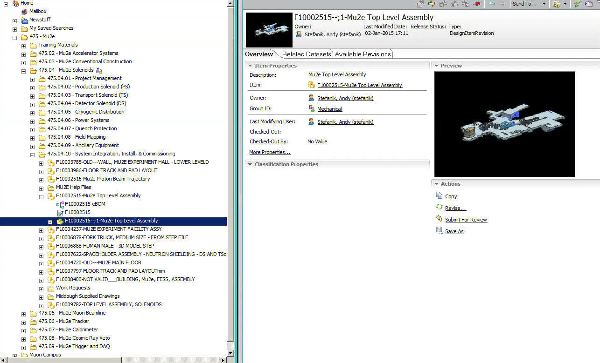

Running TeamCenter
(last modified 10/14/15 by Eric Prebys)
These are some notes on running TeamCenter at FNAL, specifically to
access Mu2e content. At the moment, I access TeamCenter from my
Mac via the Citrix Server.
Logging into the Citrix server
Use Safari (!!) to log into the Citrix server at: https://tcxen.fnal.gov/vpn/index.html
using Windows (Fermi domain) credentials. Use LDAP credentials to
log into TeamCenter. Detailed instruction on how to set up the
window can be found here.
Using TeamCenter
Start the TeamCenter application by clicking on the TC91 Icon. You can explore other users' directories, by following these instructions. I have currently copied lines to Tom Page's Mu2e tree and Steve Werkema's muon campus tree to my directory.
Inside the Mu2e tree, the global assembly drawing, can be found here (and probably some other places):

You can access this drawing by highlighting it and clicking on the "Start/Open in NX icon above". This takes a long time!